A genotype that wins in one location can lose in another. Block 9 measures that interaction and describes it in every way the literature uses: the analysis of variance of the table of means with a two-stage model for unequal errors, the regressions on the environmental index, the stability variances, superiority and reliability, the rank statistics, AMMI with its stability indices and the views of the GGE biplot, plus a summary that compares them.
Block 9 needs the same genotypes evaluated in two or more environments: locations, years or planting dates. From Block 3 it takes the adjusted mean of each genotype in each environment, with the field design of that environment, and the error of each one; with that table it computes everything else. If the data have a single environment, card 1 explains how to mark the column that distinguishes them.
| Card | What it gives |
|---|---|
| 1 · Genotype × environment table | Analysis of variance of the table, heat map and two-stage analysis with the error of each environment |
| 2 · Regression on the environmental index | Finlay and Wilkinson, Eberhart and Russell, Perkins and Jinks |
| 3 · Stability variances, superiority and reliability | Wricke, Shukla, Lin and Binns, Annicchiarico |
| 4 · Rank statistics and yield–stability | Huehn with the tests of Nassar and Huehn; Kang’s YSi |
| 5 · AMMI | Interaction axes with the Gollob and Cornelius tests; ASV, YSI, WAAS and WAASY; winners per environment |
| 6 · GGE biplot | Which won where, mean vs stability, ideal genotype and environment, discriminativeness, comparison of two genotypes |
| 7 · Summary of the statistics | All the statistics with the rank of each genotype and their rank correlations |
The thread of the chapter is the oat trial from the gallery: 10 genotypes in 14 environments with three replications in complete blocks (420 plots), with grain yield (GY). The AMMI section uses the classic example of 28 potato clones in six locations in Peru, and the checks, the table of 17 genotypes in 12 environments with which Kang (1993) illustrated his statistic.
The 1 · Genotype × environment table card has three controls: the Trait; the Best value, which you change to the lowest for days to flowering or disease incidence and which reorients all the statistics that depend on “the best”; and how empty cells are filled, by EM-AMMI with the additive model or with one or two interaction axes (Gauch and Zobel, 1990).
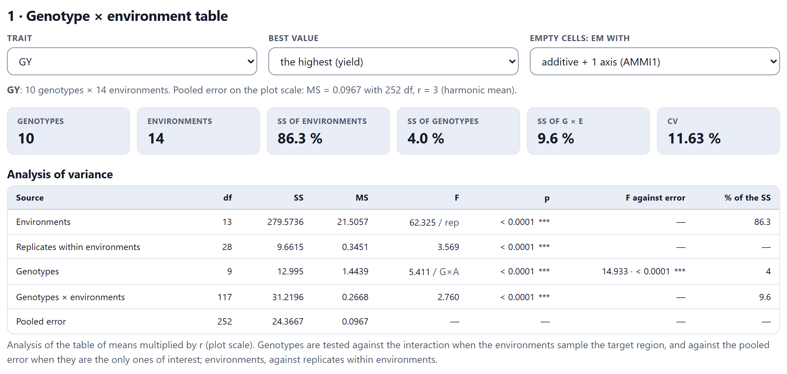
The analysis of variance is that of the table of means multiplied by r, on a plot scale, with the pooled error of all environments (0.0967 with 252 degrees of freedom). It has two tests for the genotypes: against the interaction (F = 5.41), if the environments are a sample of the region where the recommendation will be made, and against the error (F = 14.93), if they are the only ones of interest. The interaction is highly significant (F = 2.76, p < 0.0001): the ranking of the genotypes changes from one environment to another. That the environments take most of the sum of squares is normal and says nothing about the interaction.
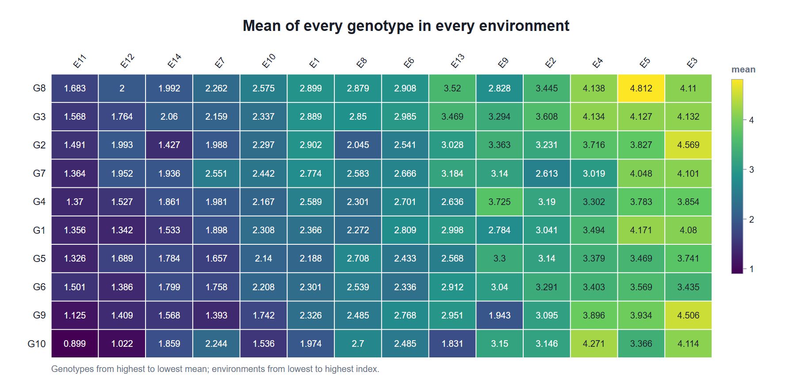
The folded box Means of every genotype in every environment has the full table; the estimated cells carry an asterisk. In the analysis of variance, the interaction loses one degree of freedom for each estimated cell.
The analysis of the table assumes that all environments have the same error, which almost never happens. Below the analysis of variance, the Error variance of every environment and two-stage analysis table gives the error mean square of each environment with Bartlett’s test, and fits a two-stage model (Smith, Cullis and Thompson, 2005; Möhring and Piepho, 2009): each mean carries the variance of its own environment and the interaction is random, with σ²GE estimated by restricted maximum likelihood.
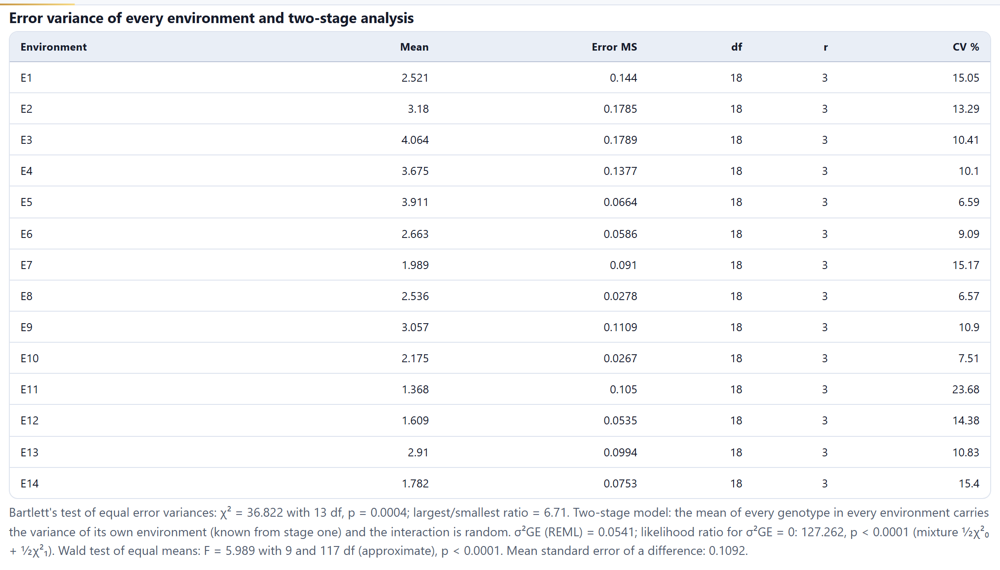
In the oat trial, σ²GE = 0.0541 and the likelihood ratio declares it different from zero (127.3, p < 0.0001, with the mixture ½χ²0 + ½χ²1 that corresponds to a variance on the boundary). The Wald test of equal means gives F = 5.99. The folded box below compares the two-stage means with the simple ones: here G7 and G2 swap third and fourth place. With very different errors among environments, the differences can be larger; in the potato, for example, a different clone takes first place.
The environmental index Ij is the mean of the environment minus the grand mean: it measures how good each environment was. The 2 · Regression on the environmental index card fits, for each genotype, the line of its mean in each environment on that index (Finlay and Wilkinson, 1963). The slope b tells how the genotype responds to the improvement of the environment (b = 1, like the average; greater, it takes more advantage of good environments; smaller, it holds up better in poor ones) and the deviations from the line, S²d, whether that response is predictable (Eberhart and Russell, 1966).
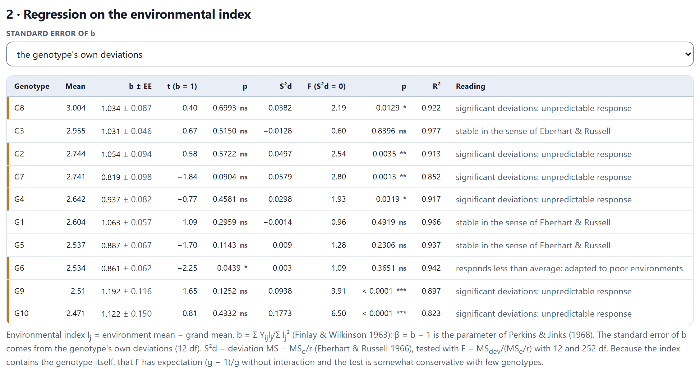
G3 is the example of stability in the Eberhart and Russell sense: high mean (2.955), b = 1.031 ± 0.046 and S²d not different from zero, with R² = 0.977. G8, the one with the highest mean, responds like the average (b = 1.034), but its deviations are significant (p = 0.013): it wins almost always, though not always for the same reason. G6 is the only one with b significantly less than 1 (0.861, p = 0.044), adapted to poor environments, and G10 the most unpredictable (S²d = 0.177).
The Standard error of b menu offers three sources: the genotype’s own deviations (12 degrees of freedom here), the pooled deviations or the experimental error. The folded box Eberhart and Russell's analysis of variance partitions the interaction into the heterogeneity of slopes (not significant here, p = 0.13) and the deviations of each genotype.
With the 17 genotypes in 12 environments of Kang (1993), the sums of squares of genotypes, environments and interaction are 186.9082, 2284.0116 and 493.2518, the heterogeneity of slopes 44.8576 and the deviations 448.3942; the slopes of genotypes A to E, 0.8617, 1.1505, 0.9755, 1.2230 and 0.9641; and their S²d, the ecovalences, the Shukla variances and the Lin and Binns superiority are also the published ones.
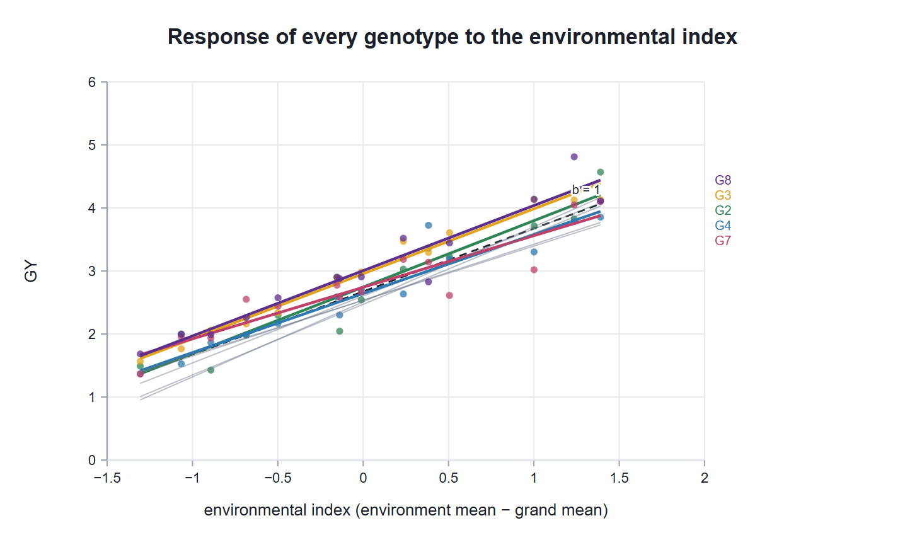
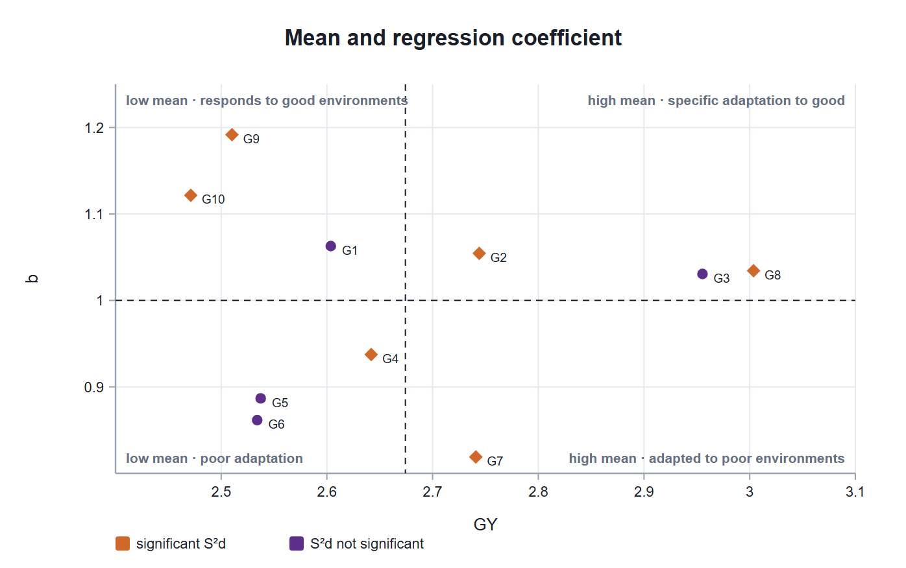
The deviations of all genotypes add up to zero in each environment, so the pooled deviations have (g − 1)(e − 2) degrees of freedom, 108 in the oat trial, and not the g(e − 2) = 120 of Eberhart and Russell; the note of the table also gives the mean square with its calculation. Moreover, since the environmental index contains the genotype itself, the F of S²d has expectation (g − 1)/g without interaction: with few genotypes the test is somewhat conservative.
The 3 · Stability variances, superiority and reliability card begins with two measures of how much each genotype contributes to the interaction. Wricke’s (1962) ecovalence, Wi, is the sum of its squared residuals from the additive model, with its percentage of the total. Shukla’s (1972) stability variance, σ²i, is the same information in the form of a variance, which can be tested against the error; s²i is what remains of it after removing the regression on the index.
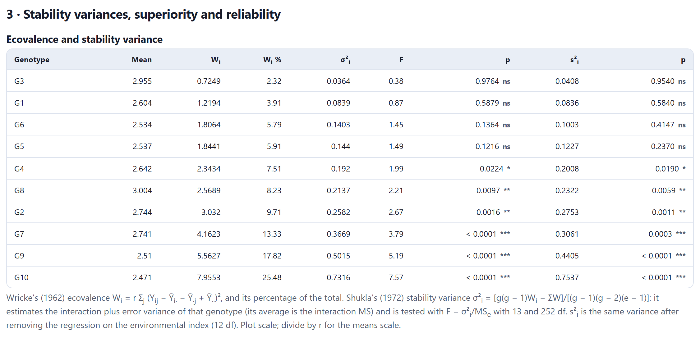
Below, the Lin and Binns (1988) superiority, Pi, measures the distance of each genotype to the best one in each environment: the smaller, the better. It combines mean and stability, and the table splits it into its genetic and interaction fractions and computes it separately in favorable and unfavorable environments. Annicchiarico’s (1992) reliability, Wi, is the relative performance (as a percentage of the mean of each environment) that the genotype exceeds with probability 1 − α; the risk α is chosen above the table.
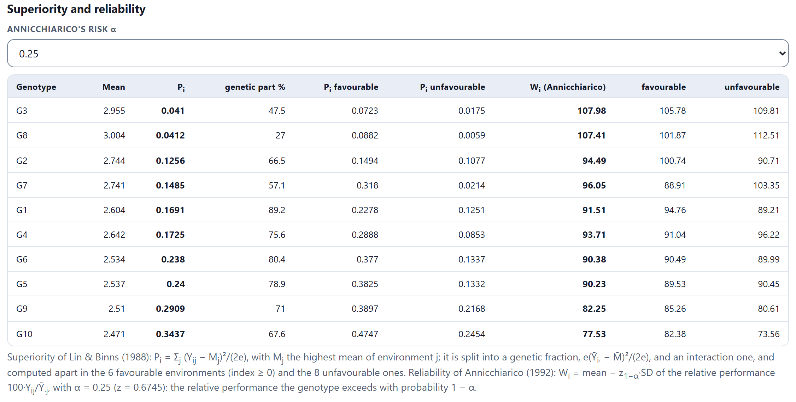
The table shows things the mean alone does not say. The superiority of G8 comes mostly from the interaction (only 27% is genetic): it is almost unbeatable in unfavorable environments (Pi = 0.006) and less so in favorable ones (0.088). With α = 0.25, G3 exceeds 108% of the mean of each environment with 75% probability, and G8 reaches 112.5% in the unfavorable ones. The reliability is only computed when the highest value is the best.
Huehn’s (1979, 1990) statistics work with the rank of each genotype in each environment, not with its values, and therefore do not depend on normality or on extreme values. S(1) is the mean difference between the ranks of the genotype in each pair of environments and S(2), their variance, both with the data corrected for the genotype effect; S(3) and S(6) use the uncorrected data and combine yield and stability. The Z tests of Nassar and Huehn (1987) mark the unstable genotypes with an asterisk.
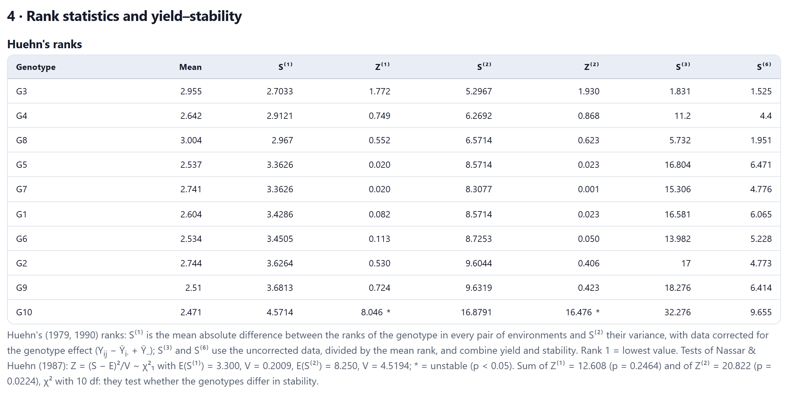
Kang’s (1993) yield–stability statistic, YSi, adds two ratings. The yield rating is the rank by the mean, adjusted with the least significant difference from the grand mean (+1 to +3 if it exceeds it, −1 to −3 if it falls below). The stability rating penalizes a significant Shukla variance (−2, −4 or −8 at 10, 5 or 1%). The genotypes with YSi greater than the average are selected.
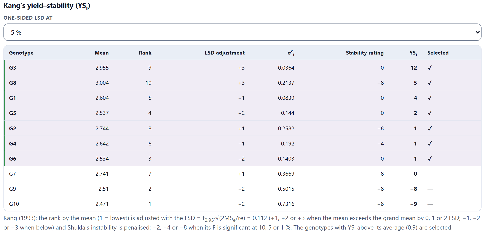
With Kang’s (1993) table, the YSi of genotypes A, B, C and D are 14, 3, 12 and 3, and A, C, E, G, H, J, N and O are selected, as in the paper. To achieve this, two values equal to 12 significant digits are treated as a tie: with rounded data, two genotypes can have the same mean and differ only in the last bit.
AMMI (additive main effects and multiplicative interaction; Gollob, 1968; Gauch, 1988) fits the grand mean and the effects of genotypes and environments, and decomposes the interaction into singular values: a few axes (IPCA) summarize almost all the pattern and the rest is noise. The 5 · AMMI card decides how many axes to retain, computes the stability indices derived from them and predicts the best genotypes of each environment. This section uses the 28 potato clones in six locations.
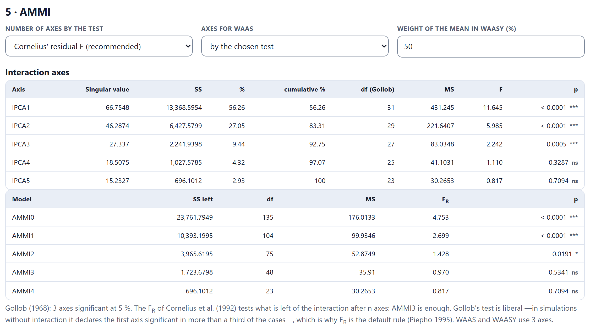
The first axis captures 56.3% of the interaction and the first two, 83.3%. Gollob’s test declares three axes significant; the residual test of Cornelius, Seyedsadr and Crossa (1992) says that after two axes there is still interaction left (p = 0.019) and after three there is not (p = 0.53): AMMI3 is enough.
In 10,000 simulated tables without any interaction, Gollob’s F declared the first axis significant 38% of the time, when it should do so 5% of the time; the residual F kept its level. That is why the residual test is the default rule of the Number of axes by the test menu (Piepho, 1995), with Gollob’s as an option. Axes for WAAS lets you set the number by hand.
With the retained axes, four indices are computed, in the Stability of the genotypes table: ASV, the distance of each genotype to the origin on the first two axes, weighted by their sum of squares (Purchase and colleagues, 2000); YSI, the sum of the ranks by ASV and by the mean (Farshadfar, 2008); WAAS, the average of the absolute values of its scores on the retained axes, weighted by the share of the interaction each one explains (Olivoto and colleagues, 2019); and WAASY, which rescales the mean and WAAS from 0 to 100 and combines them with the weight you choose.
WAAS separates two kinds of high-mean clones (Figure 9.14). 319.20 has the third-highest mean (38.8), but the largest interaction after Desiree (WAAS = 2.54): it yields a lot in some locations and little in others. 364.21 and 427.7 have somewhat lower means (34.1 and 36.2) and much more stability, and that is why they head WAASY. 402.7 is the most stable of all (WAAS = 0.10), but with a low mean. The Best genotypes of every environment table, at the end of the card, gives the three best of each location predicted by AMMI3; in La Molina 2003 (LM-03), the winner is precisely 319.20.
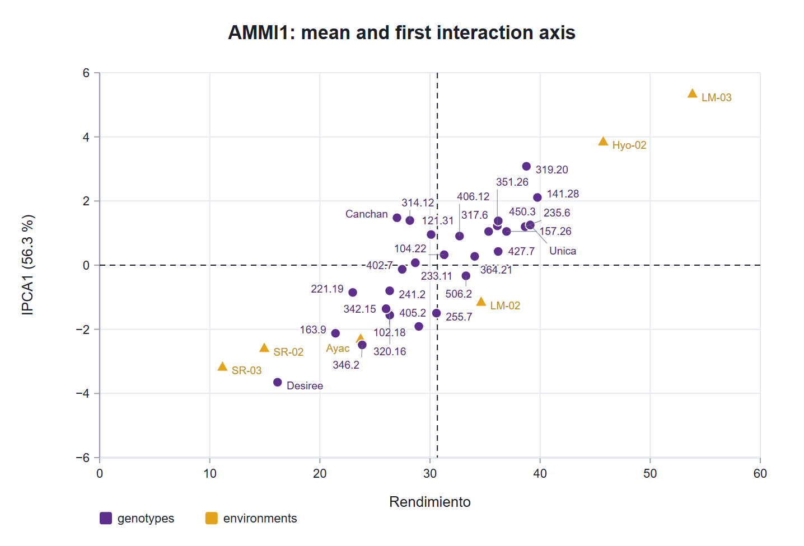
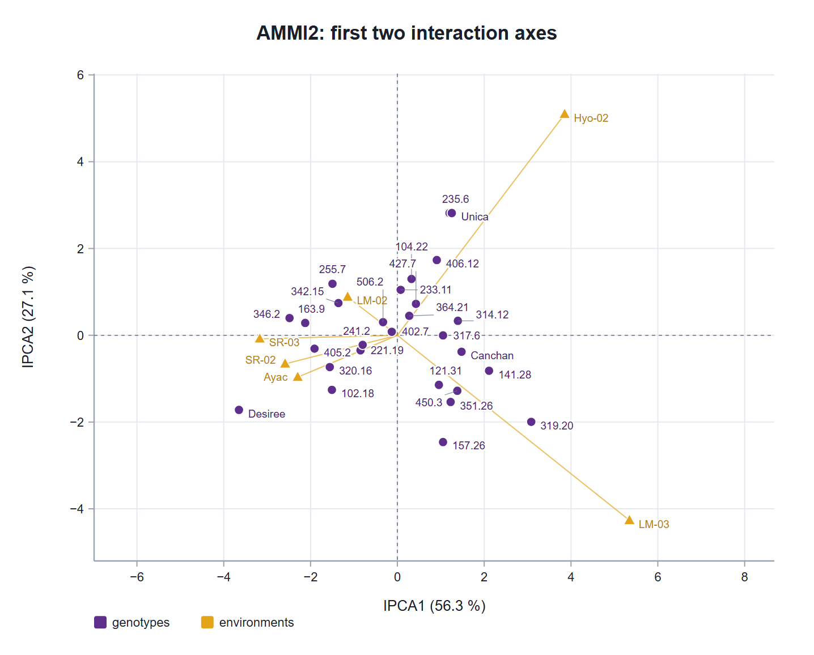
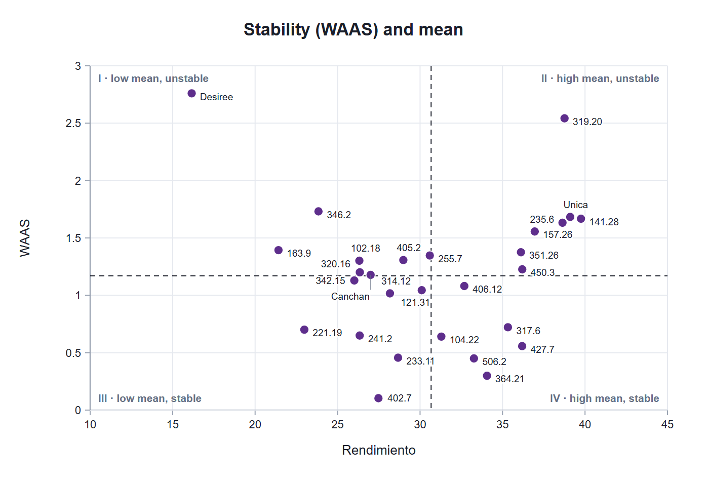
The sums of squares of the five potato axes are 13,368.60, 6,427.58, 2,241.94, 1,027.58 and 696.10; Gollob’s F values, 11.645, 5.985, 2.242, 1.110 and 0.817; and the residual ones, 4.753, 2.699, 1.428 and 0.970, the values of the classic example. The ASV and WAAS indices agree with an independent implementation; WAAS differs in the fourth decimal place from another that rounds the percentages of the axes to one decimal.
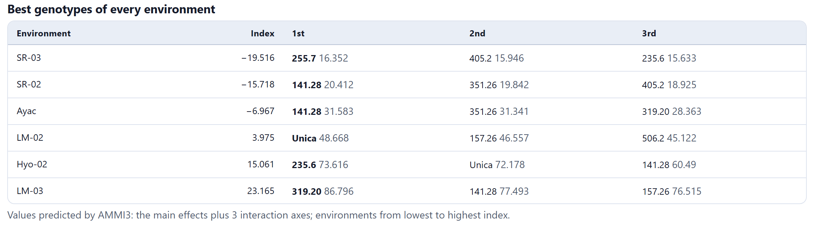
The GGE biplot (Yan and colleagues, 2000; Yan and Kang, 2003) decomposes the environment-centered table, which contains the effect of the genotypes plus their interaction (G + G×E), and draws genotypes as points and environments as vectors. The 6 · GGE biplot card has three controls: the View, the Scaling of the environments (unscaled, or divided by their standard deviation so that they weigh the same) and the Singular-value partition, which by default is the one suited to each view.
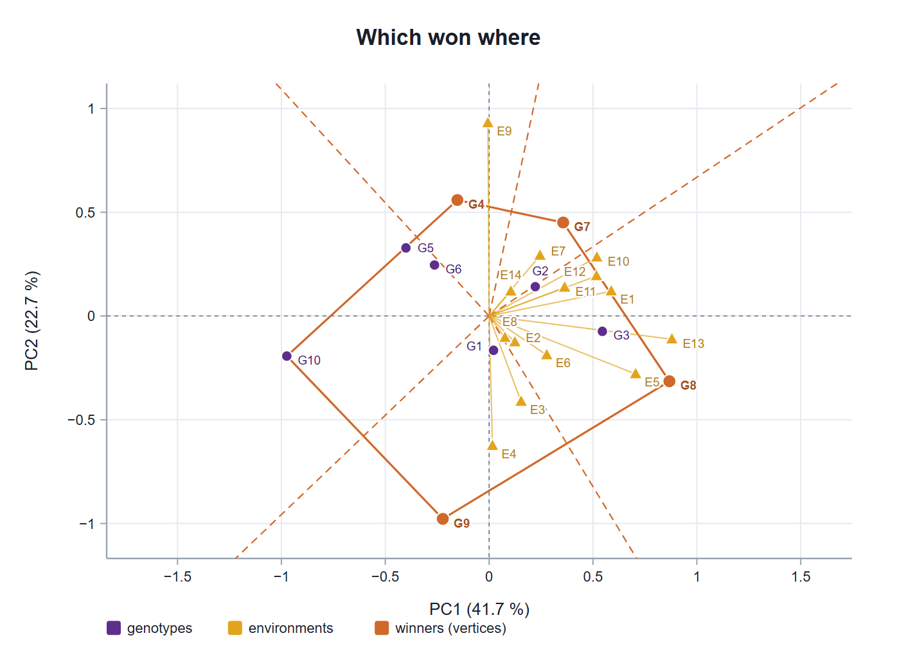
In the oat trial, the first two components explain 41.7% and 22.7% of G + G×E. If together they explain less than 60%, a warning recommends reading the biplot with caution, because it leaves out much of the pattern.
G8 wins in nine of the 14 environments; G9 in E3 and E4, G7 in E7 and E14, and G4 in E9. The table below the figure lists the environments of each winner. Those groups are possible mega-environments if the pattern repeats in other years; with a single year, they may be just noise. The mean vs stability view projects each genotype onto the average-environment axis (the arrow): the projection approximates its mean and the distance to the axis, its instability.
| View | Question | Partition |
|---|---|---|
| Which won where | Which genotype wins in each group of environments? Are there mega-environments? | symmetric |
| Mean vs stability | Which genotypes yield more and which are stable? | genotype-focused |
| Genotypes against the ideal one | Which comes closest to the ideal genotype (high and stable)? | genotype-focused |
| Discriminativeness vs representativeness | Which environments discriminate the genotypes well and which represent the region? | environment-focused |
| Environments against the ideal one | Which environment is best for testing? | environment-focused |
| Compare two genotypes | In which environments does each of the two win? | symmetric |
In the environment views, the length of the vector measures how much the environment discriminates among genotypes and the angle with the average-environment axis, how much it resembles the others. A long environment with a large angle is useful for discarding unstable genotypes, not for choosing broadly adapted ones. The compare two genotypes view adds two menus to choose them and a table that says, for each environment, which one the biplot favors and whether it agrees with the observed means.
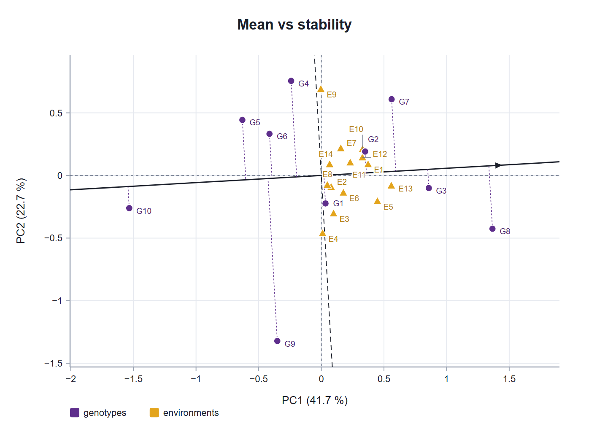
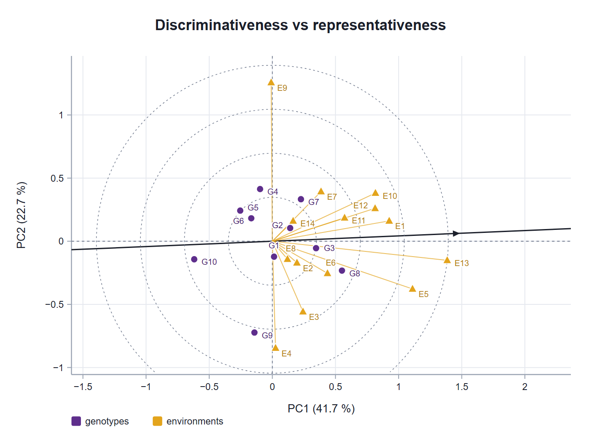
The 7 · Summary of the statistics card brings together in one table the 16 statistics of each genotype with its rank in parentheses (1 = best) and the mean rank. The mean rank serves to organize the discussion, not to decide: it adds without weights statistics that measure different things, and some repeat the same information.
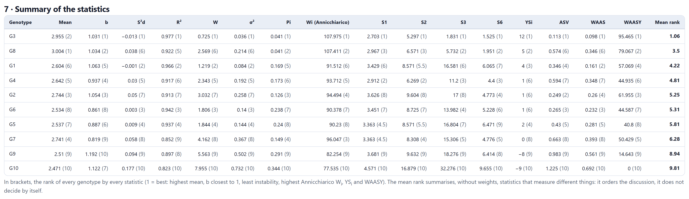
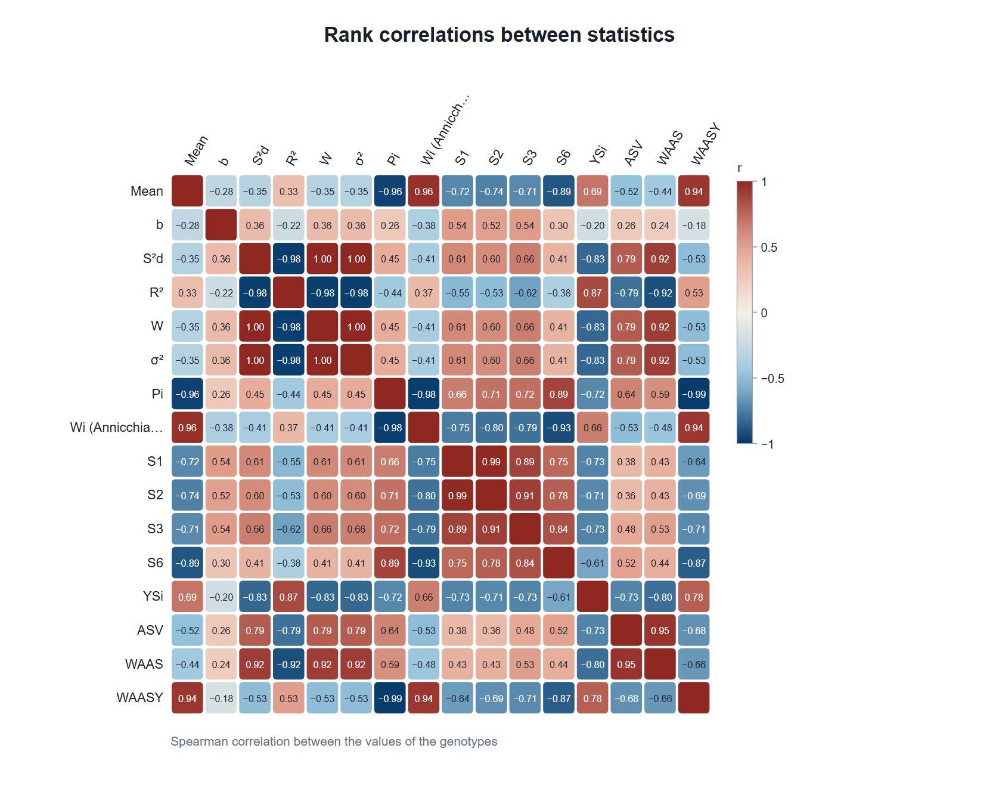
The statistics fall into two families (Lin, Binns and Lefkovitch, 1986; Becker and Léon, 1988): those of static stability, in which the genotype yields the same in all environments, and the dynamic ones, in which it follows the average pattern of the environments; those that combine mean and stability (Pi, YSi, WAASY, S(3), S(6)) form a separate group. In the oat trial (Figure 9.20), the mean goes with Pi, the reliability and WAASY, and the interaction measures (S²d, W, σ², ASV, WAAS) form another group. Wi and σ²i always rank alike, because σ²i is a linear function of Wi. Static stability is rarely desirable for yield: a genotype that does not change does not take advantage of good environments.
The 8 · Assumptions, formulas and references card summarizes the models, the formulas and the references. Results (.xlsx) downloads, each on its own sheet, the genotype × environment table with the estimated cells, the analysis of variance, the regressions, the variances, the ranks, the AMMI axes and scores, the GGE biplot coordinates and the two-stage analysis. Every figure has its download panel.
Continue takes you to Block 10 (BLUP and mixed models with relationships) and ← Selection returns to Block 8, which with several environments computes the heritability with the genotype × environment interaction.